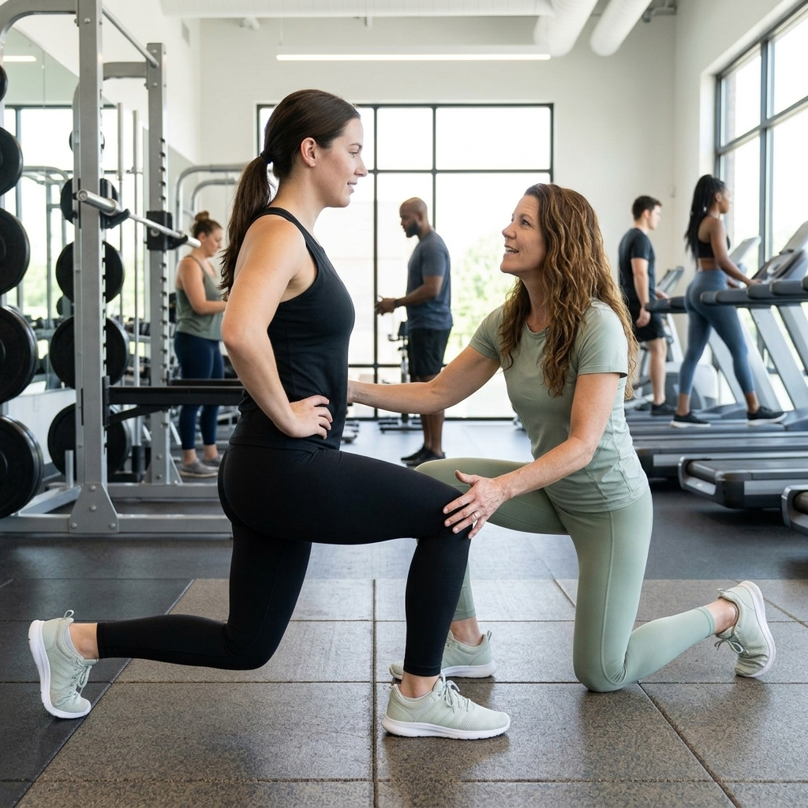

Science‑Backed Coaching Rooted in Dr. Kay’s PhD Research
As a PhD‑trained researcher in exercise motivation, self‑regulation, and metacognition, Dr. Kay brings evidence‑based strategies to every coaching session. Her academic work helps midlife women overcome motivation barriers, build sustainable habits, and regain confidence in their bodies.
Learn more about the science behind WellForm Coaching and how research informs every step of your journey.
Research BackgroundWhat I Help You Overcome
- Low motivation and inconsistent habits for women over 40.
- Perimenopause‑related energy challenges and fatigue.
- Midlife burnout, stress, and feeling “stuck” in your routine.
- Strength loss, mobility issues, and confidence dips after 40.
- Accountability and follow‑through when life gets busy.
Coaching Programs Designed for Midlife Women

Virtual Strength Training (Zoom or FaceTime)
Build strength, mobility, and confidence with personalized workouts designed specifically for women over 40. Sessions are delivered virtually via Zoom or FaceTime so you can train from home, on your schedule.

Evidence‑Based Wellness Coaching
Behavior change strategies rooted in research help you stay consistent long‑term. We focus on self‑regulation, motivation, and realistic habit design tailored to your life.
Habit Formation & Accountability Coaching
Science‑backed methods to help you follow through, even on stressful days. Together, we build systems that make healthy choices easier and more automatic.
Explore ProgramsWhy Women Choose WellForm Coaching
- PhD in Science Education (exercise motivation & self‑regulation).
- MS in Exercise Science and certified Health & Wellness Coach.
- Specializing in midlife women’s health, strength, and behavior change.
- Virtual coaching that fits busy professional and family schedules.
- Evidence‑based methods, not generic or one‑size‑fits‑all advice.
Client Transformations

“I finally built consistent habits after 20 years of struggling. The structure and science behind Dr. Kay’s coaching made everything click.”
“Dr. Kay helped me rebuild strength and energy during perimenopause. I feel more capable and confident than I have in years.”
“Virtual coaching fits my schedule — and I’m stronger than ever. I never thought Zoom sessions could be this effective.”
Frequently Asked Questions
How does virtual coaching work?
Sessions are delivered via Zoom or FaceTime. You’ll receive clear guidance, live feedback, and customized plans, all from the comfort of your home.
What makes your coaching evidence‑based?
Every program is informed by Dr. Kay’s research in exercise motivation, self‑regulation, and habit formation, combined with practical coaching experience.
How does your PhD research help clients?
Her research focuses on how people think about their own motivation and behavior. That insight translates into coaching strategies that actually stick in real life.
Is virtual strength training effective for women over 40?
Yes. With proper programming, coaching, and progression, virtual training can be just as effective as in‑person sessions for building strength and confidence.
Do you offer habit formation coaching?
Habit formation and accountability are core parts of every program. You’ll learn how to design routines that fit your life and are sustainable long‑term.
Ready to Rebuild Strength, Energy, and Confidence?
If you’re a midlife woman ready to move from “I know what to do” to actually doing it consistently, WellForm Coaching is built for you.